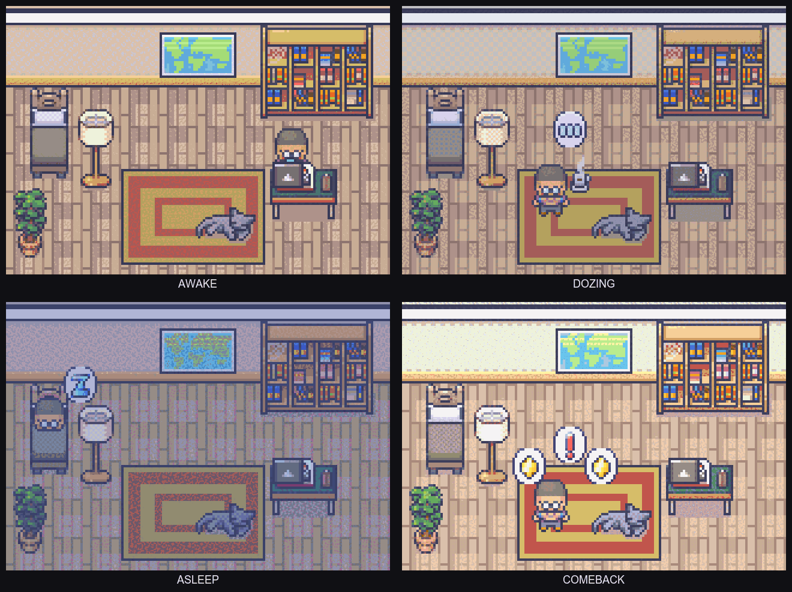

Awake
Last commit under 24 hours. They are at their desk, working.
Momentum Mascot is a retro pixel character who watches your side-project commits and simply feels what is going on. Commit and they work. Drift and they doze, then sleep. Come back after a long silence and they leap out of bed.
The mascot never dies. It waits.

It reads exactly one thing from each repo: when you last committed. No messages, no diffs, no scores.
Last commit under 24 hours. They are at their desk, working.
24 to 72 hours. Standing away with coffee, getting quiet.
Three days or more. In bed, still holding your place.
A real commit after a sleep. They leap out of bed to celebrate.
Drop pet.png here.
A 64×64 desktop pet floats over your workspace as a small ambient signal. Click it to open the room. Drag it to snap it into another corner.
Drop share.png here.
Copy a 1200×630 card to your clipboard. It carries the mood and the room — and deliberately nothing that identifies a project: no names, paths, messages, hashes, or timestamps.
Momentum Mascot.dmg from the latest release.Applications.xattr -d com.apple.quarantine "/Applications/Momentum Mascot.app"The app does not start on login yet. After a restart, open it yourself.
~/.keepgoing/mascot/state.json, which you can read or delete.Momentum Mascot is not a productivity tool. It will not score you, streak you, nudge you, or tell you how long it has been since your last commit. It is a small companion for people with demanding day jobs who go through long stretches where nothing gets committed because life is happening.